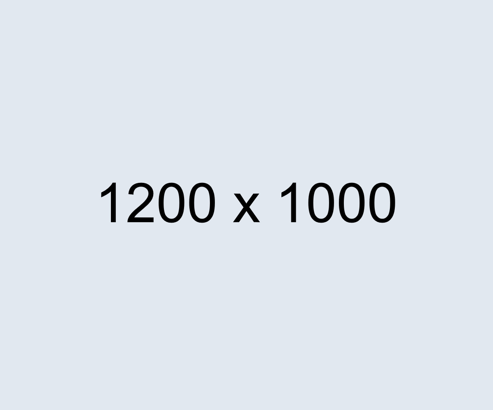

A mobile workflow app for remote customer service teams to receive, prioritize, track, and report incoming support requests in one clear place.

The project itself
Suplan is designed for distributed service teams who need a faster way to manage requests, align around priority, and keep managers informed without switching between scattered tools.
Remote support teams often lose visibility across incoming requests, urgent issues, and ownership, which creates slower responses and a weaker customer experience.
Design a centralized mobile experience where teams can triage requests, create tickets, collaborate, and track service outcomes in real time.
All about the user
Interviews with service agents and managers revealed the biggest blockers: delayed updates, unclear priorities, and limited reporting visibility.
Teams need request changes to appear instantly so nobody works from outdated information.
Agents need a simple way to identify urgent tickets and avoid low-impact work taking over.
Managers need performance snapshots without forcing agents to maintain extra spreadsheets.


The project schematically
The first design pass focused on the app map, key screens, and low-fidelity flows to validate navigation before investing in polished UI.
A simple hierarchy for inbox, tickets, client profile, chat, dashboard, and reporting.
Quick sketches explored different ticket flows and priority models before digital work.
Low-fidelity screens helped align stakeholders around structure and task flow.
Testing highlighted needs for pinned messages, unread emphasis, and solved issue states.

The clear version
High-fidelity mockups turned the validated structure into a focused mobile interface with clear hierarchy, ticket states, and collaboration surfaces.


The prototype connected inbox, ticket creation, ticket detail, clients, analytics, and chat so the team could test a realistic service workflow.
The result
The final concept helps service teams act faster by making priority, ownership, customer context, and ticket progress visible from a single app.
Small interaction details, especially status labels and notification states, can dramatically improve confidence during high-pressure support work.
Add deeper analytics, validate manager reporting needs, and test the notification model with a larger remote support team.